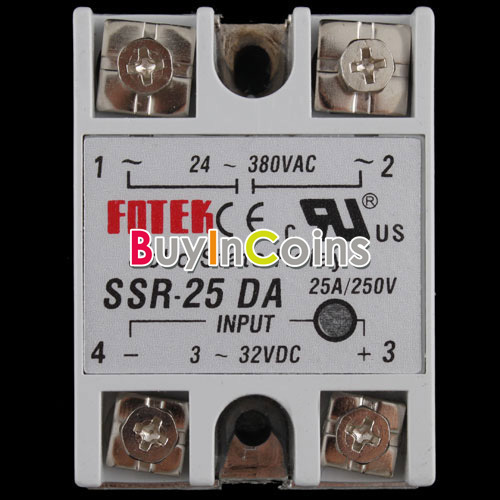
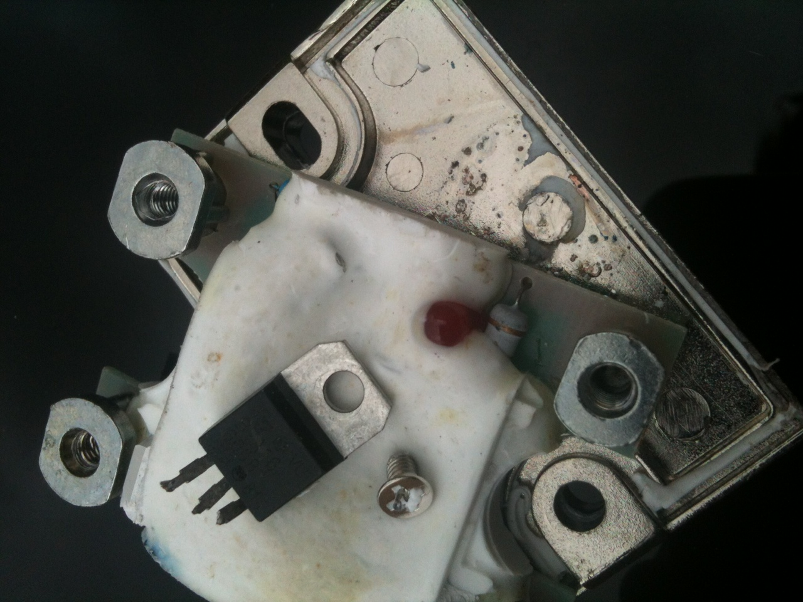
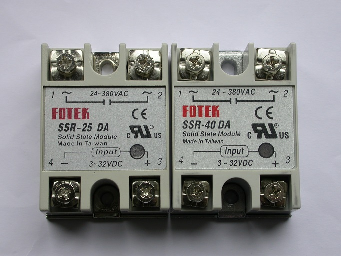
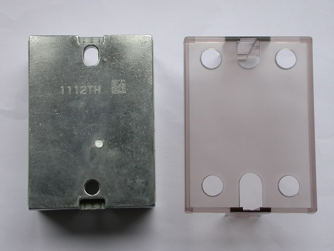
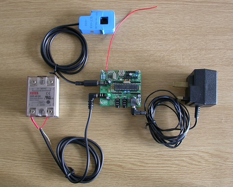

Robin has suggested that I put the details for the Mk2 kits in one place,
Price options are-
Two etched and drilled boards £10
Two boards and kit of board mounted parts £35 + £3.70 P&P
Two built up boards with C.T. socket and off board LED and flying leads (no solder option) £45 = £3.70 P&P
Contrary to my post saying I wouldn't be able to supply the triac boards on their own I will now be able to supply kits for the O/P board with all components for £15 plus £1 P&P, please PM me if interested.
Rich.
Anyone who wants a fully built unit please PM me.
International post is extra please PM me for a quote
I have attached a parts list for those who wish to source their own bits.
The input board does not show the transformer, but this is included in the kit and made up boards.
IMPORTANT NOTE - When testing the Mk2 the Arduino is best powered by a separate 9-12V DC adapter, do not rely on the USB input to power the system, it will not necessarily give you the correct 2.5V reference voltage.
To order, please contact me direct.
Robin himself now has a small supply of suitable heatsinks for Mk2 Routers - see http://openenergymonitor.org/emon/node/2857
Re: Robins Mk2 solar diverter. For sale
Very neat, Rich, especially the heatsink.
I've not been able to find Discount Devices Shop on eBay. Any chance of a link?
(I've just found it as http://myworld.ebay.co.uk/ha5ia/ , but not that tubular heatsink)
Re: Robins Mk2 solar diverter. For sale
No problem -
http://www.ebay.co.uk/itm/200703388959?ssPageName=STRK:MEWAX:IT&_trksid=p3984.m1438.l2649
Re: Robins Mk2 solar diverter. For sale
I've just etched some more boards, and have bits available so if anyone is poised on the edge now the sun is back it may be time to take the plunge!
Re: Robins Mk2 solar diverter. For sale
Just to be clear, "Robin's code" will work equally well on any platform that has a current sensor & a voltage sensor. This obviously includes the emonTx. When I started out on this lark, I was convinced that having a shared reference was best, hence my use of the buffered reference. This is the arrangement that Rich's PCBs provide.
Some months down the line, it became apparent that, for the purpose of calculating real power" (which is what the meter does), it is not necessary to remove DC from the current stream. This happens automatically in the maths. All versions of Mk2 code therefore work equally well regardless of whether there is a shared reference or two independent ones. The only thing that's important is that DC-offset is accurately removed from the stream voltage samples, a feature which has been in place in the Mk2 code right from Day 1.
For a simple and effective Power Router, the combination of a standard Arduino with a pair of Rich's PCBs is hard to beat. I've just boxed up a configuration like this, picture attached. To add a remote dump facility, or anything else that requires an RF capability, the addition of a RFM12B module is very straightforward. It can just plug straight into the Arduino's i/o sockets as my LED gantry does in the attached pic. (Those LED's are just for demo purposes, but could no doubt shine through windows in the box's cover if required)
If an emonTx platform were to be used instead for a Mk 2 Router, then one would still need to fabricate the output circuitry on strip-board or the like, and provide an external AC source for the voltage sensor. When using Rich's PCBs, a pcb-mounted transformer for the voltage sensor is already included, which is a very neat feature.
Re: Robins Mk2 solar diverter. For sale
You don't even need to fabricate the strip-board output circuitry if using an SSR.
Makes for a very simple plug-n-play solution.
P.
Re: Robins Mk2 solar diverter. For sale
The wiring from the immersion heater circuit only connects up to the triac using the live /feed wires and earth, is their any reason not to just use one 3 core flex. Using the brown core from the circuit breaker and return to the outgoing immersion heater wire with the blue wire, connecting it on a din rail connector or similar? The blue wire would of course need marking brown at both ends.
http://en.wikipedia.org/wiki/DIN_rail
http://uk.rs-online.com/mobile/p/non-fused-din-rail-terminals/0802783/
Re: Robins Mk2 solar diverter. For sale
Hi I am new to this site, I have made a very crude Arduino controlled solar diverter. This consist of 2 x hall effect sensors one monitoring solar generation and the other monitoring consumption feeding an Arduino. I have 3 x 1Kw immersion heaters wired in a series / parallel configuration this can potentially give 333w 500w 1000w 1500w 2000w & 3000w. At present I have opted for 500w 1000w 1500w and 2000w. Although this is very crude it works after a fashion. However discovering this site and seeing how much more sophisticated solutions have been developed I would like to buy the kit of parts with the 2 boards, how can I proceed with this purchase?
Many Thanks Peter
P.S. I have attached a picture of my display if is of any interest. the figures on the right are the temperatures of my 300l hot water cylinder
Re: Robins Mk2 solar diverter. For sale
Peter: Send a message to richmc
Re: Robins Mk2 solar diverter. For sale
Anyone having difficulty testing the Mk2 please see the important note in the opening post.
Re: Robins Mk2 solar diverter. For sale
Hi Rich,
Can you explain the important note in the opening post please.
As far as I'm aware, my Arduino-based systems have always worked just as well when powered from either source: USB or 9V DC adaptor.
Re: Robins Mk2 solar diverter. For sale
I've had a couple of instances recently with customers trying to power the Mk2 with a laptop or PC USB lead and having problems getting a stable 2.5V, I know it sounds strange but could be down to the quality of the PC ect. I've also seen others powering the system using an external USB power supply with no problem so I put the rider there so hopefully anyone having similar problems will try an external PSU before pulling their hair out.
Have edited it slightly.
Re: Robins Mk2 solar diverter. For sale
I've done a little more research on the arduino web site and found.
"The board can operate on an external supply of 6 to 20 volts. If supplied with less than 7V, however, the 5V pin may supply less than five volts and the board may be unstable. If using more than 12V, the voltage regulator may overheat and damage the board. The recommended range is 7 to 12 volts."
And
"5V.This pin outputs a regulated 5V from the regulator on the board. The board can be supplied with power either from the DC power jack (7 - 12V), the USB connector (5V), or the VIN pin of the board (7-12V). Supplying voltage via the 5V or 3.3V pins bypasses the regulator, and can damage your board. We don't advise it."
It's not made clear if the circuit switches between power sources to get to the 5V O/P pin but I'm guessing if its using the USB for the supply it won't take much to go below the regulators drop out voltage, effectively switching the 5V o/p off. Either way it seems it's not recommended to operate the arduino from the USB I/P if you are powering outputs.
Thats my thinking unless someone wiser comes along, and puts me right.
Re: Robins Mk2 solar diverter. For sale
OK, so the Arduino prefers to operate with its own locally regulated 5V supply rather than relying on an external one via the USB. That makes sense.
Having said which, I've never noticed any difference in performance. When running a rig via the USB, I generally disconnect any existing DC adaptor if only to give it a break. The battery in my laptop is pretty knackered so I always use the laptop on mains power. Maybe this will improve the quality of the 5V that is available at its USB ports ;)
Re: Robins Mk2 solar diverter. For sale
I had a chance to explore the nominal 5v line today.
When powered via the USB on my laptop it was 4.92v and when supplied with 7v or more from a bench PSU, the voltage was 5.01v. In each case the reference voltage was almost exactly half the measured values.
Like Robin, I could find no difference in performance from one supply or the other.
Bob
Re: Robins Mk2 solar diverter. For sale
Thank you post office, after "realigning" their postal rates, what a different way of saying "putting the price up" . P&P for kits and populated boards is now £3.70.It also appears that the "free compensation" has dropped from £50 to £20, Oh well!
Re: Robins Mk2 solar diverter. For sale
Today, I finally got around to doing a comparison of how the two platforms perform.
As a lasting record of the process, I took two videos. The first one at http://youtu.be/h8HDdIpAD_c just shows how the test rig behaves on its own. With current passing through two of the coils of my 3-phase meter in opposite directions, the dial is more or less static but a bit of drift does creep in as the currents are increased.
The second video, at: http://youtu.be/nq8U3v0nzr4 shows each of the two Mk2 Routers controlling a dump load in order to balance the flow of simulated PV. There is minimal difference between their performances. I have also checked with the two systems swapped over, thereby using different coils in the meter, and there was no noticeable difference that I could see.
So, as far as I can ascertain, the Mk2 Router design works equally well on either platform: the emonTx, with its multiple independent voltage references, or my alternative hardware which its single shared reference.
Re: Robins Mk2 solar diverter. For sale
Robin, It appears that your videos are marked as private or at least they are from my you tube a/c
Cheers
Bob
Re: Robins Mk2 solar diverter. For sale
Oops, sorry about that, they are now Public.
Re: Robins Mk2 solar diverter. For sale
I've just watched the videos, Thanks for those. Interesting that the degree of drift in the meter looks like it is masking the energy bucket algorithm in your code. I'd expect it to be moving the dial forwards and then back as 'PV' is dumped out to the grid and then pulled back.
I've got several meters here but they are all digital types rather than dial ones. Aren't they beautifully made. Real engineering!
I'm going to be busy plumbing for a while now as my thermal store has arrived. Just typical that all the components for my diverter have arrived too so I can set my other pair of hands to work on those.
Cheers
Bob
Re: Robins Mk2 solar diverter. For sale
I'd expect it to be moving the dial forwards and then back as 'PV' is dumped out to the grid and then pulled back.
When watched close-up, the dial can indeed be seen to be moving in that way. I'm sorry if that doesn't come across effectively on the videos.
My hunch is that because of its inertia, the dial has difficulty when called on to suddenly change direction, hence some non-linearity is creeping in. Digital meters do not have such problems, but they unfortunately tend to remain silent until you've been charged, by which time it's too late to do anything about it!
A home-built router provides the best of all worlds. It has zero 'inertia', and can communicate its energy state at any time. The measurement system just needs to be linear, hence my frequent reminders of this basic requirement.
The choice of hardware platform is intimately linked to its ability to measure the flow of energy linearly.
Re: Robins Mk2 solar diverter. For sale
Hi is your pv system still for sale and would it work on a 4 kw system
Re: Robins Mk2 solar diverter. For sale
Hi is your pv system still for sale and would it work on a 4 kw system
I don't see why not Roy. The hardware needs to be scaled up slightly so that
1)The CT provides +/- 400 counts of the ADC for say 16-20 amps
2)The triac or SSR needs to be rated for a minimum of 20amps and have adequate heat sinking
3) The dump load should be able to absorb the maximum power your PV system can provide. eg two immersion heaters connected in parallel or other resistive loads totally a minimum of 4kW
4) all the power wiring must be able to take the peak currents involved.
hth
Bob
Re: Robins Mk2 solar diverter. For sale
Hi is your pv system still for sale and would it work on a 4 kw system
Robin's PV system is not up for sale as such (unless someone makes him an offer that he can't refuse!), but my PV Router design should indeed be able to handle 4 kW without any difficulty.
The latest version of the sketch, Mk2i_rev5, can control any number of logical loads - and physical loads too, if you can find the pins to drive them.
If you don't require an RF capability, there should be plenty of spare pins to work with.
Re: Robins Mk2 solar diverter. For sale
I ought to point out that the thread title refers to pcb's and a kit of parts as detailed at the head of the thread; and that the emonTx kit with or without the RFM12B module can also be used, with the addition of a small handful of extra components and a pcb (available as above), heatsink and case.
If you ask nicely, richmc might put an "output kit" together for you for use with the emonTx (one resistor R6 on the triac board needs changing to 75 Ohms to suit the lower supply voltage of 3.3 V).
Re: Robins Mk2 solar diverter. For sale
"Hi is your pv system still for sale and would it work on a 4 kw system
As Robert & Robin say its not actually Robins own system hence "Robins Mk2 solar diverter (full stop) For sale." I think Robin is quite happy with his set up and wants to keep it!
I don't see why not Roy. The hardware needs to be scaled up slightly so that..........
Are you talking about 4KW of PV of 4KW of load? either way it will work fine with no adjustment.
1)The CT provides +/- 400 counts of the ADC for say 16-20 amps
Not sure what 9fingers is saying there. The Mk2 Arduino Uno based does that already, I cant speak for the open energy products as I've not tried them, I bought an Eco Eye before I knew about it. So I'm happy with my Mk2 and Eco Eye (despite its limitations) to do all the emon can offer for my needs plus I only had to build the Mk2 and have a professionally built monitoring unit on my desk.
2)The triac or SSR needs to be rated for a minimum of 20amps and have adequate heat sinking
The triac is already rated at 40A as a safety feature (that's around 9.6KW worth of resistive load) And of course a good heatsink is essential.
3) The dump load should be able to absorb the maximum power your PV system can provide. eg two immersion heaters connected in parallel or other resistive loads totally a minimum of 4kW
WHY? It dosn't NEED to absorb all the maximum power, you have to be really tight if you think you need to install another hot water tank just to prevent anything going back to the grid. Personally I'm set up to firstly heat up the water, then I manually switch over to a 2KW convection heater, why manually? because if I'm not in I don't need to waste generated power heating the home, I'd rather "stay green" and let the grid have it. In the summer I will be installing aircon with a different switching system. If I had a swimming pool I would be heating that, but I havn't so I'm not getting into a paddy about exporting energy.
4) all the power wiring must be able to take the peak currents involved."
Yes that is true of anything you plug into your mains and rather obvious.
And lastly I sell the bits as listed in the opening post so cannot supply just the O/P board (sorry Robert, just not worth the faffing around as I etch the boards as pairs four or eight at a time), I make practically nothing from this stuff once postage in and other costs like etchent and equipment is taken into account. My time isn't factored in either, I sell this stuff because I enjoy "playing around" with electronics something I did professionally for many years. I also like to think I'm helping others to benefit from Robins elegant design and use of his code and of the code he has adapted from other sources by supplying these kits to others. I will on occasion supply a full unit to those who don't feel comfortable doing it themselves but stress its up to them what they do with the box of magic tricks.
Re: Robins Mk2 solar diverter. For sale
Hi, I am looking to build one of these, what bits do you have available and what bits will I still need to get in order to complete it. I live in Spain and in dire need of one of these routers as I am getting charged by my grid provider for any excess that I produce!!!!
Thank for your help.
Cheers
Don.....
Re: Robins Mk2 solar diverter. For sale
Thewaver is that really happening? Jajaja viva España.
Un saludo!
Re: Robins Mk2 solar diverter. For sale
Hi, I am looking to build one of these, what bits do you have available and what bits will I still need to get in order to complete it.
Don, all the available items are listed at the top of this thread, as I explained to you in my PM.
Re: Robins Mk2 solar diverter. For sale
well, I am told that it depends on what meter you have. If you have the old mechanical type with the spinning wheel, then this is fine, no charge for any excess being pumped back into the grid. If you have a digital meter, then you will be charged for excess being pumped back into the grid, I read that iberdrola are embarking on a project to update all of their meters to new smart digital meters. I have a digital meter, worst luck!!
Re: Robins Mk2 solar diverter. For sale
Contrary to my post saying I wouldn't be able to supply the triac boards on their own I will now be able to supply kits for the O/P board with all components for £15 plus £1 P&P, please PM me if interested.
Rich.
Re: Robins Mk2 solar diverter. For sale
It's good that you are now doing this richmc but, as has been said many times before, wouldn't it make more sense for people to use an SSR instead since they are available for <£10 ?
I know there have been questions about the quality of some of the very cheap (£3) eBay versions but I'm sure there are also some good ones out there too. It would be helpful if anyone who is using one successfully could post their supplier details.
Re: Robins Mk2 solar diverter. For sale
Hi Martin, just giving the consumer the choice, Having seen some of the fakes selling for £15-£20 being cheap is not the only issue, just because you pay more doesn't mean you are going to get the real thing, The two big suppliers (I can't name them buy you know) have been stung by finding stock of all sorts of components to be fakes. Personally I would prefer to know that what I an using is safe and legitimately produced. A "fake" SSR could be built with bona fide parts, but then what, is it encapsulated in fire retardant epoxy or a cheep liquid plastic that will give off cyanide if it catches fire. For the sake of a few quid I'll build my own thanks.
Re: Robins Mk2 solar diverter. For sale
I'm not aware of any good SSR's Martin, but I used a £3 SSR-25 DA from Ebay and it only lasted a couple of weeks.
It was bolted to a large steel plate, used thermal paste and only controlled a 4A passive load, yet it only lasted 2 weeks (not as long as it took to arrive from China!), but then, what should I expect for £3....
I'm now using a BTA16-600B Triac (£2.09p from Maplins) + MOC3063 optocoupled driver which I feel more comfortable with.
Paul

Re: Robins Mk2 solar diverter. For sale
I've used a BTA16 too without any trouble. Some months ago, I unintentionally left it running for several hours on a lovely sunny day. With only a small heatsink in place, I thought it would have fried. But no, it survived and has been an integral part of my demo rig ever since. Last week it was replaced by a BTA25 and attached to a larger heatsink. After running for an hour at 3 kW, this arrangement was pleasantly warm, but certainly not hot.
The BTA series of triacs seem mighty robust to me. For most systems, the BTA41 is massively over-rated for the job.
Re: Robins Mk2 solar diverter. For sale
The point about using the BTA41 was that it might, just might be able to survive blowing a 13 A fuse or tripping a 16 A MCB. A lesser rated device would stand no chance. ( The I2t value is 1000 A2s compared with 144 A2s for the 16 A version.) The maximum junction temperature for both is 125 °C so they can safely get quite warm.
Re: Robins Mk2 solar diverter. For sale
Good point, Robert, thanks for the reminder.
The only point I was trying to make yesterday is that there is no need to go for the higher rated triac under normal conditions. Under normal conditions, with a 3 kW load, the 16 Amp BTA16 with a suitable heatsink works fine.
With its smaller package type (TO-220), getting the heat out of the BTA16 is more tricky than for the higher-rated devices. The 25 and 40 Amp versions both have the larger (TO3) package.
Re: Robins Mk2 solar diverter. For sale
Did you open up your faulty SSR Paul? I'm curious to know what was in it and hopefully what failed. Someone (Robert?) mentioned that they had seen some clones that just had a reed switch inside them.
The one that Petrik opened up looks reasonable - at least it has a triac in it!
Re: Robins Mk2 solar diverter. For sale
What I didn't mention is a triac is to a first approximation a constant-voltage device (in the 'on' state), so the power dissipation is dependent only and almost perfectly linearly on the average current passing through it. In fact, the 40 A version has a somewhat lower dissipation (14 W compared to 17 W @ 15 A ) due to its lower bulk resistance.
You can of course use the lower rated triac, but unless you want to include a very expensive but easily replaceable fast-acting fuse, you'd better make sure the triac is easily replaceable. (Even with the 40 A one, its survival is by no means certain.)
It wasn't me who said a SSR was 'just' a reed relay. I have one in front of me, made by FR Electronics (now Crydom) that does have a reed relay in it (you can hear it ping), but it also has the top of a TO-3 Q6025 poking through a hole in the base, clearly intended to sit on a hefty heatsink. The Q6025 is a 25 A triac, I believe. Obviously this one couldn't be used even for burst-mode control.
Re: Robins Mk2 solar diverter. For sale
The one that Petrik opened up looks reasonable - at least it has a triac in it!
Sorry, cancel this post, I was behind the times. Things move fast around here. Blink and you can miss half a dozen posts!
Re: Robins Mk2 solar diverter. For sale
"The point about using the BTA41 was that it might, just might be able to survive blowing a 13 A fuse or tripping a 16 A MCB. A lesser rated device would stand no chance. ( The I2t value is 1000 A2s compared with 144 A2s for the 16 A version.) The maximum junction temperature for both is 125 °C so they can safely get quite warm".
I knew there was a reason I went for the 40A triac, it was after the fuse debate early on in the Mk2 thread and Noah wanting to switch 6KW, from what Robert says worth sticking with it.
"The one that Petrik opened up looks reasonable - at least it has a triac in it!"
I'm not sure I agree with that , I've seen the best and worst of electronic construction and think thats pretty poor, blooby soldering with the triac leads rather close to each other. And it looks like the triac tab has been cut off, also no sign of any heatsink compound and the component encapsulation looks like a token gesture. I wouldn't be happy using that.
The problem with SSRs is you don't know how good they are unless you destroy them by hacking them apart.
Re: Robins Mk2 solar diverter. For sale
Martin, well as can be seen, they have almost covered all of the components in some sort of (very hard) resin, with just the LED protruding, and despite my trusty hammer, I could not remove it!
The Triac is a BTA16-600B which was screwed to the metal back plate, and which again was completely enclosed in the resin, so no air circulation was possible and there was no thermal compound between the Triac/backplate.
Not exactly CE lab testing, but I reassembled the case, and put a blowlamp on it for 15 seconds until it was well alight and emitted loads of black acrid smoke. To my surprise, it self-extinguished within 3 seconds. A further prolonged blast from the blowtorch showed that it retained it's structure and did not drip molten plastic. Again it self-extinguished almost immediately.
Paul
PS - Martin, I've now installed root onto a external HDD from a fresh install, so I've only about a week's worth of data and therefore your php script hasn't kicked in yet. I'll let you know how it goes.

Re: Robins Mk2 solar diverter. For sale
If an SRR at best just has a triac inside it, then what is the objection to simply using a triac? An MOC3041 and BTA41 pair come to no more than a fiver, and their performance is virtually guaranteed.
Seems a no brainer to me (he says while diving for cover ...)
Re: Robins Mk2 solar diverter. For sale
1) If using a emontx module, it avoids building and mounting another PCB to accommodate the Triac driver.
2) It's neater and easier to physically mount and wire a SSR.
But neither of the above apply if the SSR's longevity and performance are issues.
Paul
Re: Robins Mk2 solar diverter. For sale
That sounded like fun, especially the blow torch bit, Like burning ants with a magnifying glass, but for grown ups. And bares out my point that with an SSR you can see what you are getting.
I used to be an engineer for Kodak on equipment that had around 25 SSRs on board, even as a "foot soldier" we would carry at least 4 spares and get through them pretty quickly I think they were mainly Crydom relays, now £36 a pop.
Re: Robins Mk2 solar diverter. For sale
Thanks for that Paul. It's a shame they do get covered in resin as without it you could doctor one to improve any shortcomings. I guess we'll never know what actually failed.
I have to agree that the emonTx/SSR combination is by far the neatest and most professional-looking solution. Probably the easiest to build too. I'm sure there are good quality SSRs out there. This one from Farnell looks promising for £18.
I've ordered a couple of the Fotek ones from UK eBay suppliers to have a play with.
Re: Robins Mk2 solar diverter. For sale
I can't see why a properly built SSR should be any less reliable than a PCB with the exactly the same components on it Rich?
Re: Robins Mk2 solar diverter. For sale
Well, 10 out of 10 for delivery anyway! I ordered two 25A SSRs at £6.49 each and one 40A version at £13.20 from different suppliers yesterday afternoon and they all turned up in this morning's post.
There is a clear difference in quality between the two versions. It's subtle but everything feels and looks slightly better on the 40A device. The label contrast is much better, the text is crisper and the circle around the LED window is exactly centered.

Also the 40A part came with a protective cover and there is clear evidence of heat sink compound on the screw holding the triac on the 40A device, whereas there isn't any sign of this on the 25A devices.

The chap selling the 40A parts made a point of stating that they are genuine CE approved parts and considering the above comments and the general feel of quality I think I'm inclined to believe him. I also think I could probably now tell the difference between genuine and cloned parts.
Now to do a bit of testing...
Re: Robins Mk2 solar diverter. For sale
Martin, Robert Wall made the suggestion that it may be better to trigger the SSR by using negative applied from the emonTX rather than positive applied, because you would have an increased voltage margin to effect the trigger cleanly.
If you want me to test them to see if they self-extinguish, I've got plenty of gas left!
Paul
Re: Robins Mk2 solar diverter. For sale
Yes, that makes sense, although the spec is a bit confusing because at 5V there is a slightly higher voltage if you apply the positive signal whereas at 3V it's slightly higher if you apply the negative signal.
Are you going to do your test in an enclosed space to test for cyanide too :)
Re: Robins Mk2 solar diverter. For sale
"The label contrast is much better, the text is crisper and the circle around the LED window is exactly centered."
So what one is the fake?, did either come with a silicon thermal washer as specified by the maker?
Re: Robins Mk2 solar diverter. For sale
Sorry, I thought I'd made it clear that I believe the 40A one to be genuine but obviously I can't be sure. Neither came with a thermal washer but then I haven't seen any mention of one being supplied with any of manufacturer's info that I've looked at.
Regardless to these particular examples it's clear that there are genuine, quality SSRs around and if you want a professional-looking, CE approved solution it's surely the best, possibly the only, way to go.
Still think the emonTx/SSR combo is the easiest to put together too, and you get the benefits of a second CT input for PV monitoring, RF capability and temperature and pulse inputs...

Re: Robins Mk2 solar diverter. For sale
Hi- I am in the process of building my own PV diverter - I bought one of Robin's kits and have just put together a new emonTX that I bought a while ago. I also have a Crydom D2450PG SSR and thought I would have a look at driving it as an alternative. The Crydom is currently about £30 from Farnell.
Using the emonTX and a very simple sketch of on/off every half second I found that the Crydom was making my load light bulb flicker. Although its rated at 3-32v to trigger, 3.3V from the emonTX was not good enough. (The front does say 4.5V-32V - I suspect the Farnell and the spec sheet are wrong)
Using the Temperature connector proved a good solution as it can supply 5V and switches down to 1.7V when switched to on (5v - 3.3V). No flickering when using this setup - it works perfectly.
Can anyone answer if I be loosing anything by not using Robin's kit for the CT input side and just having a standard CT connected to the emonTX?
Ian
Re: Robins Mk2 solar diverter. For sale
Hi, as I don't supply any kits myself, I presume that you've bought one from Rich ;)
The input circuitry on those boards requires a +5V supply from which to drive the buffer for the shared reference supply. The outputs are expected to go to an Arduino which has its ADC input range set to the default value of 5V.
The emonTx runs on 3.3V and so its input signals need to be biased at the lower value of 1.65V. This happens automatically when you populate the relevant resistor locations.
I think your question is: "Does Robin's Mk2 PV Router work equally well using either type of hardware?" The answer to which is "Yes, both platforms appear to give give identical performance."
Re: Robins Mk2 solar diverter. For sale
Thanks for that - ill go with the SSR first and keep the kit as a backup or to dump into another source.
Ian
Re: Robins Mk2 solar diverter. For sale
As far as I'm aware, your SSR will only replace the output components, i.e. the triac and trigger. You'll still need the input circuits, but either variant of hardware should give the same performance.
As your SSR requires a 5V control signal, then an Arduino + Rich's input board would seem a good way to go. You could then use your emonTx with Rich's output board and a triac for a second system.
Re: Robins Mk2 solar diverter. For sale
I have to reiterate, if you use an SSR, you don't know what you are using, if it only costs you a few quid as we all know "you get what you pay for". At least if you go for my option you can see what you are getting. I'm honestly wondering why I bothered to start this thread. It was meant as a simple statement of what I have to offer, not a platform for those who think they know better to throw their 2p worth in. There are many on this and other forum who have had SSR failures, to my knowledge there have been no failures with my boards based on Robins system.
I'm happy to have 100 plus happy people using the boards I've produced in one form or another who are using them to save money heating water.
Re: Robins Mk2 solar diverter. For sale
Interesting debate - I have both richmc and SSR+emontx on the desktop. In my case SSR is hooked to the emontx pulse output configured to 5V. As the SSR can be ordered with DIN rain mount this allows me to install it inside the main fuse cabinet next to warm water solenoid as a professional installation with CE approved parts. Richmc unit I will continue to use when testing but as it is lacking normal installation screw holes and its not CE marked it will stay as testing rig. Both of these have a purpose and a place in the evolution of mk2(i) as the BTA triac based output device.
Re: Robins Mk2 solar diverter. For sale
Hi richmc - Great job on the boards/kit. Are they still available?
Re: Robins Mk2 solar diverter. For sale
Hi Solaroz you have PM.
Re: Robins Mk2 solar diverter. For sale
Hi,
On RichMC cct diagram, R7 is stated as 380 ohms but on the parts list there is no 390 ohm resister listed. There is a 360 ohm listed so am I right in assuming that R7 is really a 360 Ohm resister ?
Thanks
Re: Robins Mk2 solar diverter. For sale
As far as I'm aware, Rich has always followed the Mk2 Router design that I posted originally. The component values in the output stage are exactly as recommended in Fairchild's datasheet.
The resistor that's connected to pin 6 of the trigger is 360R, and the one that's connected to pin 4 is 330R. Having said which, neither of these values appear to be critical.
At once stage, while attempting to obtain a value of exactly 360R by using two resistors in parallel, I inadvertantly connected them in series. This gave a total resistance in excess of 1Kohm, yet the circuit worked perfectly during the next few days until I spotted my mistake and remedied the wiring. I also recall someone saying that one of these resistors need not be fitted at all.
Re: Robins Mk2 solar diverter. For sale
Suitable heatsinks for Mk2 Routers are now available at:
http://openenergymonitor.org/emon/node/2857
Re: Robins Mk2 solar diverter. For sale
Earlier this year, I bought a batch of "output" PCBs from Rich. Around a dozen of these are surplus to my needs and I'd be happy to pass these on for £8 each including postage.
These boards are ideal for an emonTx-based PV Router. Send me a PM if you're interested.
(Cheers Rich, hope to see you back online soon)
Re: Robins Mk2 solar diverter. For sale
Is it still possible to purchase a PV Router board , or assembled unit ?
I am using an emontx3 with 4 Ct's 1x grid 2 x pv 1 x EV
Dave
Re: Robins Mk2 solar diverter. For sale
Talk to Robin Emley (calypso_rae). I only got hold of the schematic for the production emonTx V3 last night, so I can't comment on how easy (or otherwise) it is to use it to drive the opto-trigger and hence perform as an energy diverter/router. For now, an emonTx V2 or Arduino would be the safest starting point.
We've not heard from Rich for some time, although I believe attempts have been made to contact him.
[Edit] I understand Rich has in fact been in contact with one of the community recently. We hope he's recovering satisfactorily and will be back soon.
Re: Robins Mk2 solar diverter. For sale
I can only supply the output PCB. The input circuitry is not difficult to construct on stripboard for use with an Arduino.
I've not used the V3 emonTx but see no reason why this board can't be used for a Mk2 PV Router just as the V2 version. Then there's no need for an input board, only an AC voltage source. The output pin for the trigger may need to be changed, but the same PCB for the trigger & triac should be usable.
Re: Robins Mk2 solar diverter. For sale
I should be getting my hands on a production V3 within a day or two. It's not immediately clear how practical it is to drive an output, nor which one to use, and that's why I was suggesting staying with V2 until the V3 is proven in this application.
Re: Robins Mk2 solar diverter. For sale
It should be just as easy if not easier to control things from the emonTx V3. A number of I/O's are broken out on the terminal block for easy access. See the port map on the wiki: http://wiki.openenergymonitor.org/index.php?title=EmonTx_V3
If IRQ is not needed dig 2 is an easy one to use as a digital I/O.
ADC 5 / Dig19 and Dig 5 are connected together with with a 4.7K resistor for DS18B20. This can be removed if not required or one of the I/O's could be used as long as the other is in high impedance state (input). The schematic is on solder pad: http://solderpad.com/openenergymon/emontxv3/.
Any feedback, ideas for future revisions is much appreciated. Please message me direct, I struggle to monitor all forum threads.
Re: Robins Mk2 solar diverter. For sale
I'm pretty new to all this. i now have a emonTx V3 up and running with 2 CTs to monitor my solar and grid power. I'm very keen to get a solar diverter up and running asap.
I presume I'll need a temperature sensor for the cylinder (need to to run a long cable from my main cupboard up to the cylinder - recommendations for cable?)
I've read many posts giving both sides of the arguement for either a controller / triac or SSR. I have to admit the SSR looks neater.
At the moment I'm using the emonTxV3 Discrete Sampling sketch to output some nice dials and graphs. I presume a replacement sketch to switch the triac / SSR would also still be able to transmit the data required to keep these running?
Exciting times ahead - and lower electricity and gas (HW )consumption in sight!
Re: Robins Mk2 solar diverter. For sale
Yes - if you choose the right sketch!
Re: Robins Mk2 solar diverter. For sale
If you just want to heat your water, there's no need for a temperature sensor. Until the 'stat opens, your diverter system will keep on heating while the sun shines. If a sensor is available, the code would need to be able to make some use of it.
So far, none of my Mk2 PV Router sketches have included temperature sensing or the transmission of routine data. Other constructors have gone down this route, but I've not done so. Once my new hardware (*) is available, I intend to post further versions of the Mk2 code that will include an RF capability which can supply routine data for use by emonCMS. The new hardware has two independent current-sensors thus making it possible to record accurately the amount of diverted energy, or anything else of interest, e.g. total generated energy.
Knowing how much surplus energy has been diverted "today" is a really nice feature. Having been away for a few days, I was pleasantly surprised to find the DHW was hot on our return. With my front-panel display showing "2.317 kWh", that explains why :)
(*) My new h/w is described at: http://openenergymonitor.org/emon/node/3238
Re: Robins Mk2 solar diverter. For sale
Hi
I am new to the forum so have not got to grip with the protocols as yet.
I am in the process of collecting together the components for the Mk2 and would like to buy the input and triac pcbs.
What will the price be including postage to Devon and what is the ordering process.
Please help.
Thanks in anticipation.
Re: Robins Mk2 solar diverter. For sale
Hi Laurence, if you send me a PM, I should be able to help :)
Thanks, Robin (calypso_rae)
Re: Robins Mk2 solar diverter. For sale
Hi Robin eand all.
I'm trying to set up robins mk2 with an ssr . the voltage as i have now read and discovered requires to be 5v . how can i convert mk2 to give this trigger voltage
Thanks Chris
Re: Robins Mk2 solar diverter. For sale
How about adding a transistor stage which could supply a higher DC voltage to your SSR?
Or you could use an Arduino which runs at 5V rather than 3.3V
Re: Robins Mk2 solar diverter. For sale
Thanks Robin
Thats done the trick , Flashing away quite nicely
regards Chris
Re: Robins Mk2 solar diverter. For sale
Hello. Would you kindly share where you bought these genuine SSR from?
I'd like to know since it seems they are genuine, as per:
http://canada.ul.com/safetyalerts/ul-warns-of-solid-state-relay-with-cou...
and there are so many fakes overheating, etc.
Thanks
Re: Robins Mk2 solar diverter. For sale
http://uk.rs-online.com
Re: Robins Mk2 solar diverter. For sale
A while back, I was kindly given a 25A SSR to play with. This SSR appears to work OK but I have always used the Crydom version instead, mainly because that name has often appeared on this forum.
Turns out that my supposedly "Fotek" SSR is an exact match to the counterfeit one in the above link ...